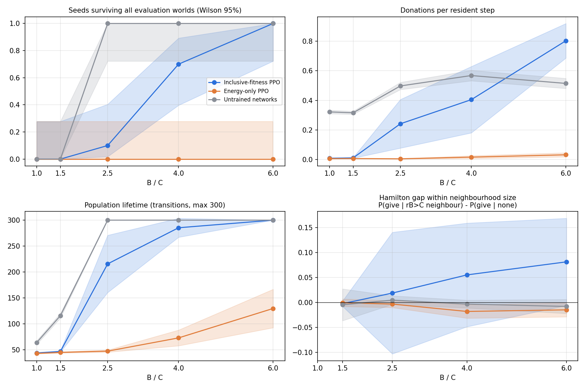
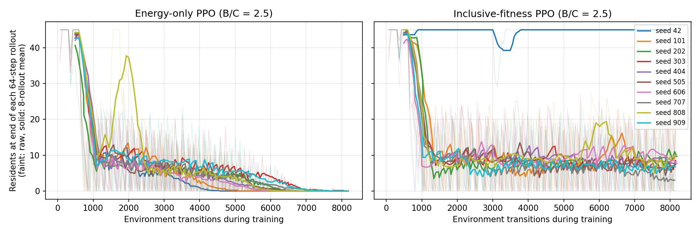

CS329 Multi-Agent Systems — Group 21, IIT Gandhinagar Vansh Barfiwala (24110380) · Pratham Choksi (24110275) · Shubham Chandak (24110335)
Cooperation is costly to the individual, so why would self-interested learners cooperate? We study this in a spatial donation game. Agents on a grid lose energy every step, can donate energy at cost \(C\) to give a neighbour \(B>C\), and reproduce or starve. Each founder family owns an independent gated-attention policy trained with PPO; children inherit their family's policy, and surviving families are selected between episodes. Agents observe a possibly corrupted genetic cue and each neighbour's recent giving. With the purely individual energy reward of our ideation, PPO unlearns cooperation: in all 90 of 90 runs across 18 robustness conditions, trained populations gave less than untrained ones, and in a five-level \(B/C\) sweep with ten seeds per level no energy-only population survived (0/50). Adding Hamilton's inclusive-fitness term \(r_{ij}B\) to the donor's reward changes this. Inclusive learners gave more than energy-only learners in all ten seeds at every \(B/C\ge1.5\) (Holm-adjusted \(p=0.02\)), and survived in 17/20 runs at \(B/C\ge4\) against 0/20 (Fisher \(p=2.6\times10^{-8}\)). Learned giving follows Hamilton's threshold: below it (\(B/C\le1.5\)) inclusive learners abandon giving; at \(B/C=6\) they give more than untrained networks in 9/10 seeds. Reward controls show what kin information adds. Crediting every gift equally also keeps populations alive (10/10), but kin-weighted credit directs more gifts to relatives than credit of the same expected size given regardless of recipient (8/10 seeds, \(p=0.01\)). Learners rely less on a corrupted genetic cue, but never switch to behavioural history, and they keep feeding genetic mimics, which a simple reputation rule ignores completely. The advantage also depends on the discount: at \(\gamma=0.99\) inclusive and energy-only learners fare the same. The learning signal, more than the architecture, decides whether cooperation can be learned; recognising kin remains the weak link.
Helping costs the helper and benefits someone else. In a population with a scarce resource, a selfish individual who accepts help but never gives has more energy than one who gives. Yet cooperation is common in nature. Kin selection, direct and indirect reciprocity, and spatial structure are the classic explanations [10]; Hamilton's kin-selection theory is the one we study. A gene for helping can spread when helpers preferentially help relatives who carry the same gene, specifically when
\[r\,B > C,\]
where \(C\) is the cost to the helper, \(B\) is the benefit to the recipient and \(r\) is their genetic relatedness [1].
We model this as a multi-agent decision problem. Agents live on a grid, burn energy every step, and can either move or donate energy to a neighbour. Energy enters the system only through donations: each one creates \(B-C>0\) of net energy. Without cooperation the population starves. The dilemma is that each individual is better off not donating.
Multi-agent reinforcement learning (MARL) agents usually maximise their own return. Sequential-social-dilemma and common-pool studies [2]–[7] typically add intrinsic motivations, inequity aversion or gifting mechanisms to obtain cooperation. We ask a sharper question: is a purely individual learning signal enough for cooperation to emerge in a population with inheritance and selection, or must the learning signal itself include Hamilton's kin term? We then ask whether learned helping obeys Hamilton's inequality, and how learners respond when the genetic cue they rely on becomes unreliable or is faked by mimics.
Adding other agents' gains to an agent's own reward is known as prosocial reward shaping [11]. Social value orientation generalises it with a weight on others' reward [12], and the weights themselves can be evolved [13]. Our inclusive-fitness reward is a special case in which the weight on a recipient's gain is its relatedness \(r_{ij}\). What this project adds:
What is and is not built in. Under the inclusive reward, the immediate value of a gift is \(r_{ij}B-C\), so Hamilton's threshold is part of the incentive by design. That is the point of the manipulation: it tests whether learning can follow a kin-weighted incentive. It does not determine the outcomes we measure. These are: whether finite-budget PPO with hidden, noisy relatedness finds and keeps cooperation; whether the population survives; whether kin information beats kin-free credit of the same size; and, conversely, that the individual energy reward of the original proposal makes cooperation unlearnable.
The system is a partially observable Markov game on an \(18\times18\) torus with a dynamic population \(\mathcal N_t\) (capacity \(N_{\max}=45\), \(N_0=24\) founders).
| Element | Definition |
|---|---|
| Agent state | Position \(p_i\), energy \(E_i\), 8-bit chromosome \(c_i\in\{0,1\}^8\), last \(K=10\) actions, age, family \(f(i)\) (the founder whose network the agent uses) |
| Neighbourhood | \(\mathcal N^\rho_i\): all agents within Chebyshev radius \(\rho=3\) (up to 48). The observation \(\Omega_i\subseteq\mathcal N^\rho_i\) holds the 8 nearest. |
| Observation | \(o_i = \big(E_i/E_{\text{mit}},\ \text{age}_i,\ \{\Delta p_{ij}/\rho,\ E_j/E_{\text{mit}},\ \tilde r_{ij},\ b_j\}_{j\in\Omega_i}\big)\) |
| Actions | \(\mathcal A_i=\{\text{N},\text{S},\text{E},\text{W},\text{stay}\}\cup\{\text{give}(j): j\in\Omega_i\}\). Not giving (moving or staying) is the defect choice. Giving is masked unless \(E_i>C\). |
Genetic cue. Normalised Hamming similarity \(h_{ij}=1-\tfrac18\sum_k|c_i^{(k)}-c_j^{(k)}|\). Baseline-corrected cue \(\tilde r_{ij}=\max\!\big(0,\frac{h_{ij}-\bar h}{\max(1-\bar h,\epsilon)}\big)\), where \(\bar h\) is the mean similarity over active pairs. With cue noise \(\nu\), every observed bit is flipped independently with probability \(\nu\) at every step. The true chromosomes are unchanged.
Behavioural cue. \(b_j\) is the fraction of \(j\)'s last \(K\) actions that were donations given by \(j\). A newborn starts at the prior \(b_0=0.5\).
Mimics (attack conditions). At \(t=10\), six non-learning invaders are placed in random empty cells. They carry the modal resident chromosome, so their genetic cue looks like kin, but they never donate and never move. They are "green-beard" cheaters [9]: carriers of the marker without the helping behaviour. Mimics need free population slots. In Study B they share the 45 slots with residents, so a population already at capacity receives fewer than six (the scripted reputation rule, whose populations fill up fastest, received 5.2 on average). Study C therefore reserves six extra slots that only mimics can use (capacity 51; births still stop at 45 residents), and every one of its 700 attacked episodes received all six mimics.
| Known to the agent | Unknown to the agent (must be learned or inferred) |
|---|---|
| Own energy and age; neighbours' relative positions and energies | The value of giving to a particular neighbour |
| The observed (possibly corrupted) genetic cue \(\tilde r_{ij}\) | The true relatedness \(r_{ij}\) and how reliable \(\tilde r_{ij}\) is (\(\nu\)) |
| Each neighbour's recent giving \(b_j\) | Who is a mimic; what policies neighbours run |
| — | \(B\), \(C\), metabolic costs, the environment dynamics (model-free learning) |
One transition proceeds as follows. Actions are applied simultaneously. Movement conflicts are resolved randomly, and swaps and chains are allowed. Energy is then updated:
\[\Delta E_i = -c_{\text{base}} - c_{\text{dens}}\,|\mathcal N^\rho_i| - C\,\mathbb 1[a_i=\text{give}(\cdot)] + B\sum_{j}\mathbb 1[a_j=\text{give}(i)] .\]
Every donation therefore creates \(B-C\) units of net energy. Total energy is not conserved. Agents with \(E_i\le0\) die. An agent with \(E_i\ge E_{\text{mit}}\) divides, if capacity remains and a von Neumann neighbour cell is free (otherwise it waits). The parent and child each receive \(E_i/2\), so mitosis alone conserves energy. The child inherits a copy of the chromosome with per-bit mutation probability \(\mu\), the parent's family network, and \(b_0=0.5\). Episodes last 300 transitions or until extinction.
Base parameters: \(E_0=30\), \(E_{\text{mit}}=60\), \(C=2\), \(B=5\) (so \(B/C=2.5\)), \(c_{\text{base}}=0.6\), \(c_{\text{dens}}=0.08\), \(\mu=0.05\), \(K=10\), \(\rho=3\).
All rewards are computed before the mitosis split.
Under the inclusive reward, the one-step effect of giving to \(j\) on the donor's reward is exactly \(r_{ij}B-C\). Hamilton's rule is therefore the immediate incentive. The agent is never told \(r_{ij}\): it sees only \(\tilde r_{ij}\) (possibly corrupted) and \(b_j\), so it must learn whom to help. Unit tests (tests/test_hamilton_study.py, tests/test_hamilton_robustness.py) verify the exact change in the donor's reward from one gift: \(-C+rB\) (inclusive), \(-C+B\) (prosocial), \(-C+\bar r B\) (kin-blind) and \(-C\) (energy-only). A gift to a mimic earns \(-C\) under every reward except the prosocial one.
Because \(\tilde r\) and \(b\) also enter \(z_{ij}\) directly, the gate weight \(w^g\) alone is not a valid measure of reliance. We therefore measure reliance from behaviour: per-seed conditional-logit weights of the actual recipient choice on standardised \(\tilde r\) and \(b\) (§5.2–5.3). The gate weight is reported only as telemetry.
Each of the 24 founders owns an independent network and Adam optimiser, trained with PPO [8]. Descendants act with their family's network, and each family network is updated by PPO only on its own members' transitions. Settings: rollout 64 transitions, 3 epochs, minibatch 64, learning rate \(3\times10^{-4}\), \(\gamma=0.9\), GAE \(\lambda=0.95\), clip 0.2, value coefficient 0.5, entropy 0.01, gradient-norm clip 0.5. Death is terminal and no credit flows past it. A critic per family, rather than a centralised MAPPO critic, is used because rewards are individual and decentralised.
Choice of \(\gamma\) (disclosed). In separate pilot runs (seed values 42, 101 and 202 at 4,096–8,192 transitions; these runs are not part of the reported data), inclusive-fitness PPO with \(\gamma=0.99\) collapsed. Under the energy reward the return telescopes, \(\sum_t \Delta E_t = E_{\text{end}}-E_0\), so long horizons mostly add uncontrollable metabolic variance, whereas the Hamilton incentive is immediate. We therefore use \(\gamma=0.9\) for every condition and report a \(\gamma=0.99\) condition as a sensitivity analysis. Energy-only PPO also fails at \(\gamma=0.99\) (Study A).
At the end of each episode (300 transitions or extinction), the next episode's 24 founders are drawn with replacement from surviving residents, so families are weighted by their abundance. Each draw copies the resident's chromosome, family network and optimiser state. Selection never uses donations, relatedness or reward. After total extinction there is no winner: the networks are kept and the previous founder chromosomes are reused. This implements "successful lineages spread their policy", which the proposal stated but did not specify.
Initialise capacity N_max, mask M in {0,1}^N_max, energies E, positions P, chromosomes C
for t = 0 .. T_max-1:
observe active agents (M_i = 1), sample a_i ~ pi_f(i)(o_i)
resolve moves; apply donations (C from donor, B to recipient); E <- E + dE
for each active i: if E_i <= 0: M_i <- 0 # starvation frees the slot
for each active i with E_i >= E_mit and sum(M) < N_max:
cells <- free von Neumann neighbours of P_i; if cells is empty: continue
k <- argmax(M == 0) # first FREE slot
M_k <- 1; E_i, E_k <- E_i/2; C_k <- mutate(C_i, mu); P_k <- random choice(cells); f(k) <- f(i)
The proposal's argmin(M == 0) returned an occupied slot. The implementation (np.where(~mask)[0][0]) was already correct.
| Comparator | Purpose |
|---|---|
| Energy-only PPO at every \(B/C\) | Matched control for the inclusive reward (RQ1/RQ2) |
| Untrained networks (same founders and chromosomes, initial weights) | Is learning better or worse than not learning? |
| Evolution only (selection, no PPO) | Can selection alone maintain cooperation? |
| Fixed gate \(w^g=w^b=0.5\) | Proposal ablation for the learned gate (RQ3) |
| No-attention MLP | Proposal ablation for attention |
| Random offspring placement | Spatial-assortment control (RQ4) |
| \(\gamma=0.99\), for both rewards | Optimiser sensitivity; rules out the discount as the cause of the energy/inclusive difference |
| Prosocial and kin-blind rewards (Study C) | Does kin information matter, or any credit for giving? |
| Mutation 0 and 0.20 (Study C) | Sensitivity to genetic diversity |
| 4× training at \(B/C=2.5\) (Study C) | Does learning catch up with untrained networks given more experience? |
| Scripted rules: selfish, tag trust (\(\tilde r>0.3\)), reputation (\(b>0.5\)), dyadic Tit-for-tat, Hamilton rule (give to \(\arg\max\tilde r\) iff \(\tilde r B>C\)) | Reference behaviours, including the "known model" solution. Evaluated alongside the learners (same worlds, same founder genomes) in the mimic ecologies, and separately in every ecology of a strategy sweep: seven \(B/C\) levels, noise, and mimics, 10 worlds each |
The scripted Hamilton rule is the full-information benchmark from guideline direction C. It is told that the rule is \(\tilde rB>C\). The learners must discover the rule from reward.
results/submission_study). The original energy reward, \(\gamma=0.99\), 2,048 transitions per run, 19 one-factor conditions: gate, MLP, noise 0.25 and 0.5, noise with mimics (with and without the gate), \(B/C\) 1.5 and 4.5, mutation 0, 0.1 and 0.2, random placement, starvation and mitosis disabled (fallback), no selection, evolution only, low learning rate, high entropy, and 4× training.results/hamilton_study). 20 conditions at 8,192 transitions per run and \(\gamma=0.9\): energy-only and inclusive rewards at five \(B/C\) levels, evolution only, and, at \(B/C=2.5\), inclusive with \(\gamma=0.99\), noise 0.25 and 0.5, mimics, noise 0.5 with mimics (learned and fixed gate), fixed gate, MLP and random placement.results/hamilton_robustness). At \(B/C=2.5\) most inclusive populations collapse, which leaves robustness tests with too few gifts to analyse. Study C repeats them at \(B/C=4\), where inclusive populations are viable, and adds: prosocial and kin-blind rewards (clean and with mimics), mutation 0 and 0.20, \(\gamma=0.99\) for both rewards, evolution only, and 4× training at \(B/C=2.5\). That is 18 conditions. Its baselines (inclusive and energy-only at \(B/C=4\)) are the Study B runs, which use the same code, seeds and worlds. A strategy sweep runs the five scripted strategies in 10 ecologies (10 worlds each).In Studies B and C, each condition is trained with ten independent seeds (42, 101, 202, 303, 404, 505, 606, 707, 808, 909); Study A used the first five. Each trained checkpoint is evaluated with frozen weights in three fresh worlds (seeds \(s+10000+1000k\)), with and without attack where applicable, and the untrained control is evaluated in the same worlds. Study B comprises 200 training runs and 1,830 evaluation episodes; Study C comprises 180 training runs and 1,980 evaluation episodes, plus 500 strategy-sweep episodes.
The unit of inference is the training seed (\(n=10\)): worlds are averaged within each seed first. Means use 95% Student-t intervals. Paired contrasts use per-seed differences with an exact two-sided sign-flip test. With ten pairs the minimum attainable p is \(2/2^{10}\approx0.002\). Survival counts are compared with Fisher's exact test. Every (condition, seed) run is trained independently, so the 50 inclusive-versus-energy pairs can also be stacked into an exact binomial sign test. We report it only as a secondary summary, because at \(B/C\le1.5\) both rewards give almost nothing and tiny differences count as "wins". The ten per-level primary contrasts (inclusive minus energy, at five \(B/C\) levels, on donation rate and lifetime) are Holm-adjusted. Regression intervals come from a cluster bootstrap that resamples training seeds within each condition (500 replicates), so decision rows are never treated as independent. Decision rows are a 25% random sample of donation opportunities (capped at 3,000 rows per seed for the pooled logistic model). Two refinements separate the two parts of a decision. First, a conditional logit over the neighbours of each gift models whom the agent gives to; terms that are constant within an opportunity, such as \(B/C\) and the donor's own state, cancel. Second, the Hamilton gap is stratified by neighbourhood size (Mantel–Haenszel weights). Agents with more neighbours both give more often and are more likely to have an \(rB>C\) neighbour, so the raw gap is positive even for untrained networks.
All numbers below come from results/hamilton_study/analysis.json (Study B), results/hamilton_robustness/analysis.json (Study C) and results/submission_study/analysis.json (Study A). They are reproduced in full in the results tables for Study B and Study C, and as spreadsheets: one row per trained model and one row per evaluation episode. Brackets are 95% intervals over the ten training seeds. "Seeds surviving" counts seeds whose population was alive at step 300 in all three evaluation worlds.
Study A: energy-only PPO, γ = 0.99, 18 learning conditions. In all 90 of 90 independently trained runs (18 conditions × 5 seeds), the trained population gave less than the same founders with untrained networks (exact sign test \(p=2^{-89}\)). In the base condition, trained populations gave 0.186 [0.150, 0.223] donations per resident step and every seed went extinct. Untrained networks gave 0.528 [0.519, 0.538] and all five survived at capacity. The reduction in giving occurred with the learned gate removed, with an MLP instead of attention, at noise 0.25 and 0.5, at \(B/C\) 1.5 and 4.5, at mutation rates 0, 0.1 and 0.2, with random placement, without selection, with 10× entropy, with a 10× lower learning rate and with 4× training. Every seed went extinct in 11 of the 18 conditions. Evolution without learning kept all populations at capacity (0.507 donations per resident step).
Study B: the same populations, two rewards, five \(B/C\) levels, ten seeds each.
| B/C | Seeds surviving: inclusive | Seeds surviving: energy-only | Seeds surviving: untrained | Donations / step: inclusive | Donations / step: energy-only | Donations / step: untrained |
|---|---|---|---|---|---|---|
| 1.0 | 0/10 | 0/10 | 0/10 | 0.009 [0.006, 0.011] | 0.006 [0.005, 0.007] | 0.322 |
| 1.5 | 0/10 | 0/10 | 0/10 | 0.011 [0.009, 0.013] | 0.007 [0.006, 0.008] | 0.316 |
| 2.5 | 1/10 | 0/10 | 10/10 | 0.242 [0.078, 0.406] | 0.005 [0.003, 0.007] | 0.498 |
| 4.0 | 7/10 | 0/10 | 10/10 | 0.405 [0.180, 0.629] | 0.016 [0.007, 0.026] | 0.568 |
| 6.0 | 10/10 | 0/10 | 10/10 | 0.803 [0.686, 0.920] | 0.032 [0.018, 0.046] | 0.515 |
Inclusive-fitness PPO gave more than energy-only PPO in all 10 seeds at every \(B/C\ge1.5\) (exact sign-flip \(p=0.002\) at each level, Holm-adjusted \(p=0.0195\)); its populations also lived longer at every level \(\ge1.5\) (Holm \(p\le0.023\)). At \(B/C=1\) the difference is tiny (0.002, 7/10 seeds, Holm \(p=0.08\)). Survival: 18/50 versus 0/50 over all levels (Fisher \(p=1.2\times10^{-6}\)), and 17/20 versus 0/20 at \(B/C\ge4\) (\(p=2.6\times10^{-8}\)). As a secondary summary, inclusive learners gave more in 47 of the 50 independently trained pairs (exact binomial \(p=3.7\times10^{-11}\)).

The learning curves show the mechanism. Under the energy reward, populations decline to extinction during training, because each gift is an immediate −C. Under the inclusive reward at \(B/C=2.5\), one seed stays at capacity throughout training; in the others the population shrinks to small, fluctuating sizes (0–25 residents per episode) instead of dying out for good.

Study C: is it kin information, or any credit for giving? At \(B/C=4\) we compared the inclusive reward with two kin-free controls (§2.4).
| Reward at \(B/C=4\) | Seeds surviving | Donations / step | Gifts with \(rB>C\) | Kin preference of gifts | Genetic share of recipient choice |
|---|---|---|---|---|---|
| Inclusive (\(r_{ij}B\) for the actual recipient) | 7/10 | 0.405 [0.180, 0.629] | 0.499 [0.406, 0.592] | 0.039 [0.001, 0.078] | 0.780 [0.657, 0.904] |
| Kin-blind (\(\bar r_iB\), same expected credit) | 6/10 | 0.307 [0.085, 0.529] | 0.401 [0.327, 0.475] | 0.001 [−0.007, 0.010] | 0.444 [0.284, 0.604] |
| Prosocial (\(B\) for any gift) | 10/10 | 0.994 [0.988, 1.001] | 0.487 [0.442, 0.532] | 0.009 [0.002, 0.015] | 0.363 [0.166, 0.560] |
| Energy-only | 0/10 | 0.016 [0.007, 0.026] | 0.205 [0.101, 0.309] | −0.042 [−0.081, −0.003] | — |
Any positive credit for giving rescues the population. The prosocial reward, which pays the full \(B\) for every gift, keeps all ten populations alive by giving at almost every opportunity; survival does not differ significantly between inclusive and kin-blind (7/10 vs 6/10) or inclusive and prosocial (7/10 vs 10/10, Fisher \(p=0.21\)). What kin information changes is whom agents help. Compared with the kin-blind reward, which pays the same expected credit but does not depend on the recipient, inclusive learners gave a larger share of gifts to recipients with \(rB>C\) (+0.098 [0.026, 0.170], 8/10 seeds, \(p=0.010\)), preferred more related recipients (+0.038 [0.006, 0.070], 8/10, \(p=0.025\)), and based their recipient choice more on the genetic cue (genetic share +0.34 [0.14, 0.54], \(p=0.016\); against prosocial +0.42 [0.19, 0.65], 9/10, \(p=0.004\)).
Answer to RQ1. No: a purely individual learning signal does not sustain cooperation here, even with policy inheritance and survivor selection. Learning removes the cooperation that untrained or evolving populations show. Adding credit for the recipient's gain preserves it. Kin-weighting that credit is not needed for survival in this near-clonal population, but it is what makes learners help relatives rather than anyone.
Hamilton's rule predicts where cooperation should stop. The one-step value of giving under the inclusive reward is \(rB-C\). At \(B/C\le1.5\) a recipient would need baseline-corrected relatedness \(r>0.67\), which is rare. At \(B/C\ge4\), \(r>0.25\) suffices.
Energy-only PPO gave less than untrained networks at every level where untrained networks give (−0.50 donations per step at \(B/C=2.5\), 0/10 seeds, \(p=0.002\)). The direction of learning therefore flips with \(B/C\) under the inclusive reward, and never under the energy reward, as Hamilton's rule predicts. The scripted Hamilton rule, given the rule and the observed cue, shows the same threshold in the strategy sweep: its populations survive in 0/10 worlds at \(B/C=1\), 1/10 at 1.5, 9/10 at 2 and 10/10 from 2.5 upwards.
Recipient level (whom to give to). In the conditional logit over the neighbours of each gift (129,326 sampled gifts), inclusive agents chose recipients with higher observed relatedness: \(c_{\tilde r}=1.72\) [0.78, 2.66], with all 500 bootstrap replicates positive. Behaviour (\(c_b=0.05\) [−0.03, 0.16]) and recipient energy (0.02) had little weight. Energy-only agents made only 724 sampled gifts, too few for a reliable estimate (\(c_{\tilde r}=0.23\) [−1.16, 1.33]).
The pre-specified interaction, that relatedness matters more as \(B/C\) rises, was not supported: \(c_{\tilde r\times B/C}=-0.26\) [−0.42, −0.10]. The pooled logistic model agrees (−0.17 [−0.22, −0.09]). A post-hoc reading is consistent with Hamilton's rule as a threshold: as \(B/C\) rises, the threshold \(C/B\) falls, more neighbours qualify, and a policy close to the rule discriminates less among neighbours. Our prediction had implicitly assumed choice in proportion to \(rB\). Because this reading is post hoc, we report it as an interpretation only.
Recipient selectivity is weak overall. The share of gifts satisfying \(rB>C\) (0.32 at \(B/C=2.5\), 0.50 at 4 and 6) was not higher than for untrained networks (at \(B/C=2.5\): −0.18 [−0.39, 0.03], \(p=0.09\)). The Hamilton gap stratified by neighbourhood size separated trained from untrained networks only at \(B/C=6\) (+0.089 [0.000, 0.179], 7/10 seeds, \(p=0.027\)).
Answer to RQ2. Yes at population level: learned giving survives only where Hamilton's inequality can be met, and the learning direction reverses with \(B/C\). Learners prefer more related recipients, but they are far less selective than the scripted rule.
Cue noise. At \(B/C=2.5\) (Study B) inclusive populations mostly collapse, leaving few gifts to analyse. The genetic share of recipient choice fell from 0.64 at noise 0 to 0.33 at noise 0.5 (−0.30 [−0.60, −0.01], \(p=0.051\)); the genetic coefficient itself did not change detectably. At \(B/C=4\) (Study C), where populations are viable, the effect is clear:
| Cue noise \(\nu\) at \(B/C=4\) | Genetic choice coefficient | Behavioural choice coefficient | Genetic share | Seeds surviving | Donations / step |
|---|---|---|---|---|---|
| 0.00 | 0.199 [0.004, 0.394] | 0.009 [−0.026, 0.043] | 0.780 [0.657, 0.904] | 7/10 | 0.405 |
| 0.25 | −0.009 [−0.020, 0.003] | −0.043 [−0.114, 0.028] | 0.271 [0.103, 0.438] | 4/10 | 0.139 |
| 0.50 | −0.018 [−0.070, 0.035] | −0.004 [−0.063, 0.055] | 0.558 [0.366, 0.751] | 2/10 | 0.121 |
Noise removed the genetic cue's influence on recipient choice: coefficient 0 minus 0.5 noise +0.217 [0.045, 0.388] (8/10 seeds, \(p=0.014\)); genetic share at noise 0.25 lower in all 10 seeds (−0.51 [−0.63, −0.39], \(p=0.002\)). Learners did not compensate by relying on behaviour: the behavioural coefficient stayed near zero at every noise level, and noisy populations gave less and survived less (donations −0.28, 8/10 seeds, \(p=0.014\)).
Mimics. Six non-donating mimics carrying the modal resident genome were added at step 10. They make up about 12% of a full population, and untrained networks give them 13–14% of their gifts, about what indiscriminate giving would. At \(B/C=4\) (Study C, every attack delivered all six mimics):
| Trained with mimics, \(B/C=4\) | Mimic share of post-invasion gifts | Seeds surviving the attack | Seeds surviving without attack |
|---|---|---|---|
| Inclusive reward | 0.169 [0.084, 0.254] | 5/10 | 9/10 |
| Kin-blind reward | 0.251 [0.198, 0.304] | 2/10 | 9/10 |
| Prosocial reward | 0.064 [0.054, 0.074] | 10/10 | 10/10 |
| Inclusive, noise 0.5, learned gate | 0.260 [0.207, 0.313] | 1/10 | 10/10 |
| Inclusive, noise 0.5, fixed gate | 0.240 [0.171, 0.310] | 2/10 | 10/10 |
| Untrained networks (inclusive founders) | 0.134 [0.125, 0.143] | 10/10 | 10/10 |
| Scripted public reputation (\(b>0.5\)) | 0.000 | 10/10 | — |
| Scripted Hamilton rule (observed cue) | 0.001 | 7/10 | — |
| Scripted dyadic Tit-for-tat | 0.900 | 0/10 | — |
No learner avoided mimics. Inclusive learners gave them a larger share than untrained networks, and more than prosocial learners (+0.105 [0.022, 0.188], 8/10 seeds, \(p=0.035\)). Prosocial learners, which give at almost every step, gave mimics a smaller share (0.064, below untrained networks; we did not investigate why), and their populations were rich enough to absorb the loss. The learned gate did not beat the fixed gate (+0.019, \(p=0.44\)). Study B at \(B/C=2.5\) agrees: learners gave mimics 20–25% of gifts, no better than untrained networks (19–24%), and learned and fixed gates did not differ (+0.03 [−0.01, 0.07], \(p=0.12\)).
The scripted rules separate sharply. Reputation is immune because mimics never give, so their \(b\) is 0. The Hamilton rule and tag trust give mimics almost nothing with a clean cue (0.001), and 0.06–0.07 of their gifts at noise 0.5. Tit-for-tat fails because it cooperates with every new partner, and fresh mimics keep arriving as new partners.
Answer to RQ3. Partly. Learners reduce their reliance on a corrupted genetic cue, consistently across seeds at \(B/C=4\), which is the proposal's first success criterion. They do not learn to use the behavioural cue instead, and they do not resist genetic mimics, which a one-line reputation rule defeats completely.
Adjacent residents' true chromosome similarity did not differ between local and random offspring placement, either at \(B/C=2.5\) (+0.083 [−0.093, 0.259], \(p=0.31\)) or at \(B/C=4\) (−0.015 [−0.128, 0.099], \(p=0.78\)), nor for untrained networks. Survivor selection repeatedly restocks the population from a few surviving families, so within a few generations the population is near-clonal and neighbours are related wherever offspring are placed. RQ4 is not supported in this design; detecting assortment would need weaker selection or more founder diversity. Random placement did reduce cooperation at \(B/C=4\) (3/10 seeds surviving, 0.120 donations per step, against 7/10 and 0.405), consistent with local placement helping families stay together, but we did not measure the mechanism directly.
Why does individual PPO destroy cooperation even though its population needs it? Two facts combine. Every gift is an immediate, private −C. The benefit lands on someone else, and under the energy reward nobody's return contains it. Policy inheritance and survivor selection operate between episodes, but within an episode each family's gradient pushes every member to stop giving. Learning is faster than selection, so the population starves before selection can favour the givers. This is the tragedy of the commons, reproduced inside a gradient. Our reward test confirms the private cost: giving changes the donor's reward by exactly −C.
Why does recipient credit fix it, and only above a threshold? Adding \(r_{ij}B\) to the donor's reward makes giving pay whenever \(rB>C\), so the gradient points towards cooperation exactly where Hamilton's rule says it should. Below the threshold, inclusive learners abandon giving as quickly as selfish ones. The reward controls sharpen this. Paying \(B\) for every gift (prosocial) rescues cooperation even more strongly, because in a near-clonal population almost every neighbour is kin and indiscriminate giving is nearly optimal. Kin-weighting matters for targeting, not for survival: only the inclusive reward makes the recipient's identity part of the incentive, and only inclusive learners learned to favour relatives and to rely on the genetic cue. This is the computational content of Hamilton's insight in our setting: the learning signal, not the architecture or the population structure, determines whether and how cooperation is learned.
Kin recognition is the weak link. Learners discover that giving pays sooner than to whom. Their preference for related recipients is real but small next to the scripted rule, and they never learn to use behaviour as a cue. This matters under attack: a rule that trusts observed giving is immune to genetic mimics, whereas learners keep feeding them. Under the inclusive reward a gift to a mimic earns −C with no kin credit, so the pressure to avoid mimics existed during training, but learners did not exploit it within 8,192 transitions. A behavioural cue is only useful after a neighbour has been observed for several steps, which makes it harder for a finite-budget learner to discover than a static tag.
Comparison with the full-information solution. The scripted Hamilton rule represents what an agent that knew the model would do (guideline direction C). It shows a sharp threshold between \(B/C=1.5\) and 2.5 and gives almost nothing to mimics when the cue is clean. Learning approaches it only at high \(B/C\), and only when the horizon is short.
The ideation PDF contained the following errors. Each is fixed in this report and the implementation.
| # | Ideation statement | Problem | Correction |
|---|---|---|---|
| 1 | "Shared-parameter policy discovers that feeding valid kin maximizes the proliferation of its own weights" | PPO maximises the agent's own return. Parameter sharing does not put a relative's benefit into the gradient, and nothing rewards "weight proliferation". | Tested explicitly: energy-only vs inclusive-fitness reward (§2.4), plus an explicit selection loop (§4.3) |
| 2 | Abstract "independent PPO"; §3.1 lineage-shared parameters; §4.1 one shared policy | Three contradictory designs | One design: an independent network per founder family, shared within the family (§4.2) |
| 3 | Gate input \([\tilde r_{ij}\Vert b_j\Vert E_j]\) only | One pair cannot reveal population-level cue corruption | Contextual gate with neighbourhood cue statistics (§4.1) |
| 4 | Success criterion: a drop in \(w^g\) | Raw cues bypass the gate through the encoder, so \(w^g\) does not measure reliance | Behavioural reliance coefficients from actual choices (§5.2) |
| 5 | Regression \(\beta_0+\beta_1\tilde r+\beta_2 b+\beta_3 B/C\) | Cannot express the threshold \(rB>C\), and \(B/C\) is constant within a run | Added the \(\tilde r\times B/C\) interaction, a five-level sweep, a recipient-choice (conditional-logit) model and a direct Hamilton gap |
| 6 | Definition 2: "normalized Hamming distance" | The formula is a similarity | Renamed (§2.1) |
| 7 | Table 1: \(b_{ij}\) = donations received | The code and Definition 2 use donations given by \(j\) | \(b_j\) = fraction of \(j\)'s last \(K\) actions that were gifts (§2.1) |
| 8 | Algorithm 1: argmin(M == 0) |
Returns an occupied slot | argmax(M == 0), plus the full-neighbourhood case (§4.4) |
| 9 | "Energy is strictly conserved" | Each donation creates \(B-C\) | Only mitosis conserves energy (§2.3) |
| 10 | Eq. 4: softmax over give targets only | Moves and defection were left out of the distribution | One masked softmax over all 13 actions (§4.1) |
| 11 | "defect" action, \(\rho\), \(K\), \(b_0\), \(B\), \(C\) and other parameters undefined | Not reproducible | All defined in §2 |
| 12 | Reward definition did not state its interaction with mitosis | Halving energy would make reproduction look costly | Reward computed before the split (§2.4) |
| 13 | "Hamiltonian consistency" | Hamiltonian is a physics term | "Hamilton's-rule consistency" |
| 14 | "[3]–[8]" cited as MARL studies | [3] is Dawkins (1976), a biology book | Citations corrected below |
| 15 | Phase 1/2 "selfish baseline", "altruist-only" undefined for learners | Not implementable as stated | Replaced by scripted strategies, untrained networks and evolution-only controls (§4.5) |
| File | Content |
|---|---|
environment/grid_world.py, environment/cues.py |
Spatial donation game, pooling, mitosis, cues and mimics |
models/attention_policy.py, models/mlp_policy.py, models/rule_based.py |
Gated-attention policy, MLP ablation and scripted strategies |
experiments/inherited_policies.py |
Per-family PPO, inheritance and survivor selection |
experiments/hamilton_study.py |
Study B: inclusive-fitness reward, conditions, evaluation and decision logging |
experiments/hamilton_robustness.py |
Study C: prosocial and kin-blind rewards, mimic slot reserve, robustness conditions, strategy sweep |
experiments/inheritance_study.py |
Study A: energy-only robustness |
evaluation/hamilton_report.py, evaluation/robustness_report.py |
Statistics, regressions, figures and results tables for Studies B and C |
evaluation/verify_hamilton.py |
Integrity check, independent recomputation and exact re-simulation, for Studies B and C |
index.html, visualizer/ |
Project page that runs the committed checkpoints in the browser; data exporter and site builder |
tests/ |
Python test suite and browser-engine tests |
Python 3.12, CPU only. On 14 cores, Study B takes about two hours (200 training runs of about 5–10 minutes each, then 200 evaluations) and Study C about two and a half hours; each analysis takes a few minutes.
All 380 trained models of Studies B and C and their raw evaluation logs are included, so the results can be verified without retraining. evaluation/verify_hamilton.py checks every model's SHA-256 hash and training settings, recomputes the Study B headline numbers directly from the raw evaluation logs, checks that every Study C attack delivered its mimics, and re-simulates saved models in the same seeded worlds. Every re-simulated metric must match exactly; with --all it does this for every model. The project page reruns the same checkpoints in the browser and shows the outcome next to the recorded one.
python -m pip install -r requirements.txt
python -m pytest -q
python evaluation/verify_hamilton.py # Study B, about 3 minutes; --all for every model
python evaluation/verify_hamilton.py --study robustness # Study C
# retrain from scratch:
python experiments/hamilton_study.py --steps 8192 --workers 14
python evaluation/hamilton_report.py
python experiments/hamilton_robustness.py --workers 14
python evaluation/robustness_report.py
# Study A (energy-only robustness)
python experiments/inheritance_study.py --complete --steps 2048 --workers 3 --worlds 3 --out results/submission_study
python evaluation/inheritance_report.py --study-dir results/submission_study
python evaluation/final_report.py --study-dir results/submission_study
Completed checkpoints are reused. The exact training sources are archived in each study's source/ folder, and every checkpoint sidecar records its configuration, learning curve, library versions and SHA-256 hash. In Study C, the five mimic conditions were trained with the mimic slot reserve (archived in source/); the other thirteen have no mimics, so the reserve never applies to them, and they were trained with the previous version of the script (archived in source_v1/), which the verifier re-simulates exactly with the current code.